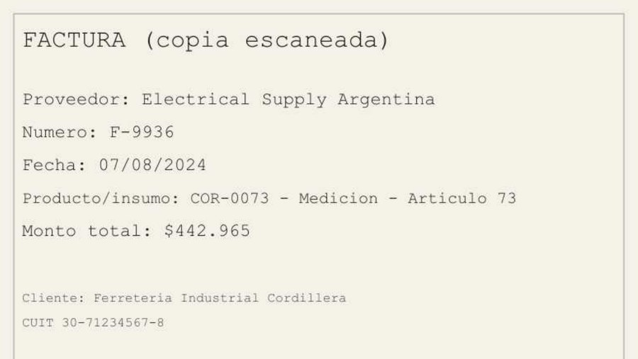
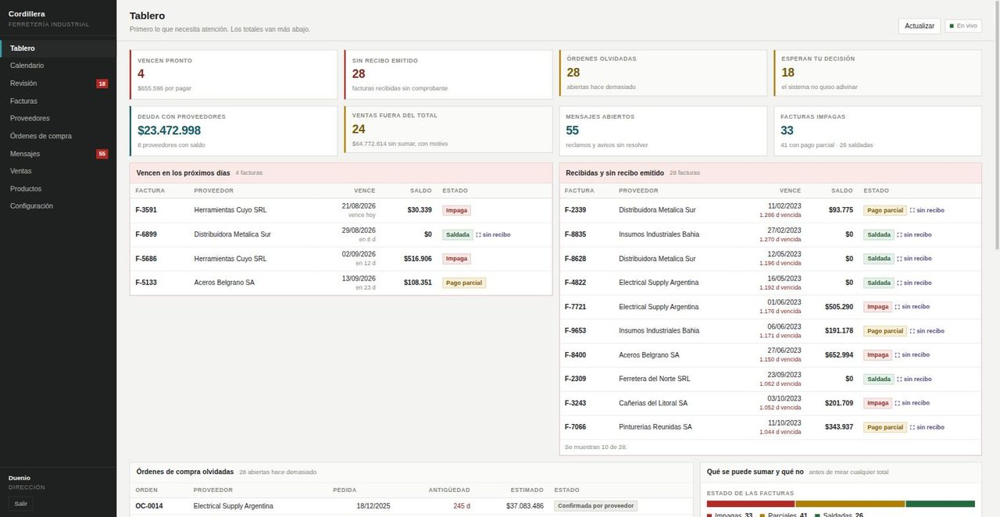
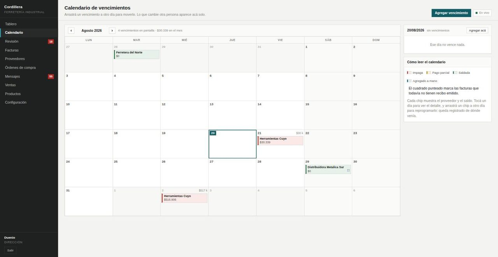
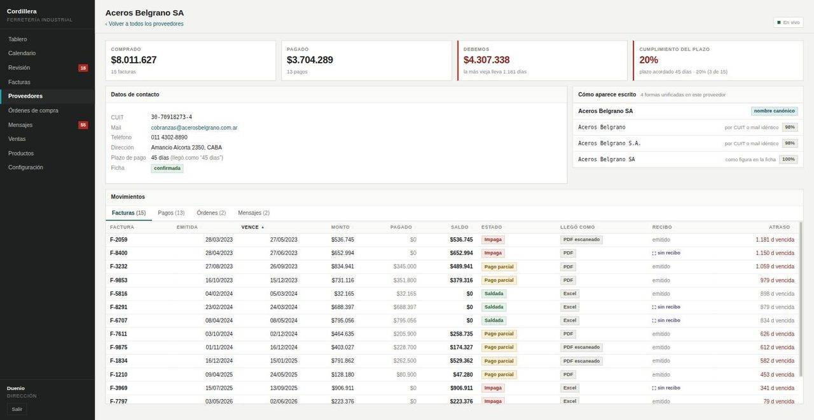
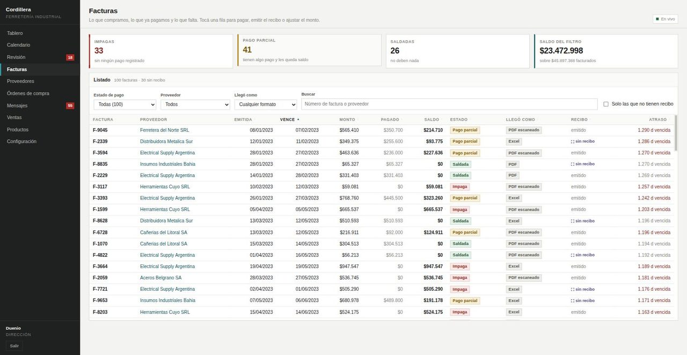
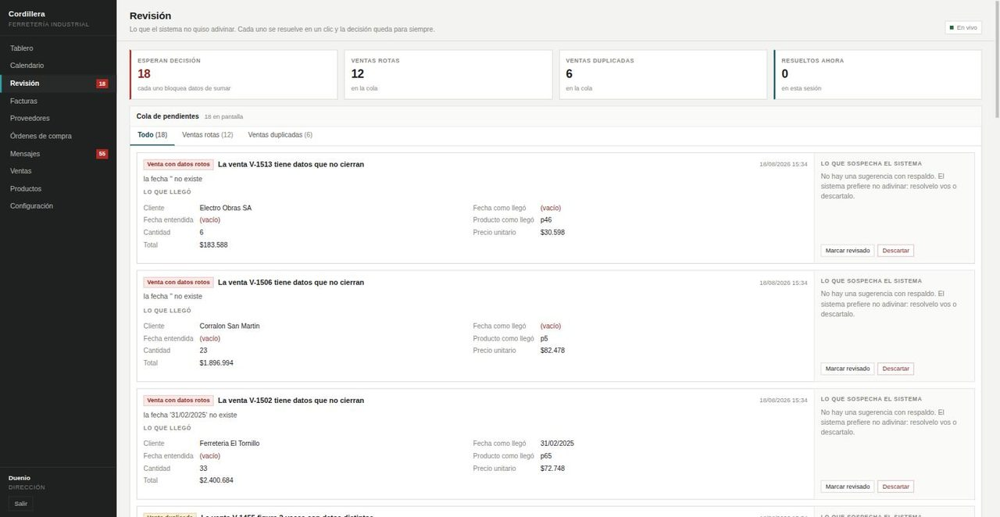
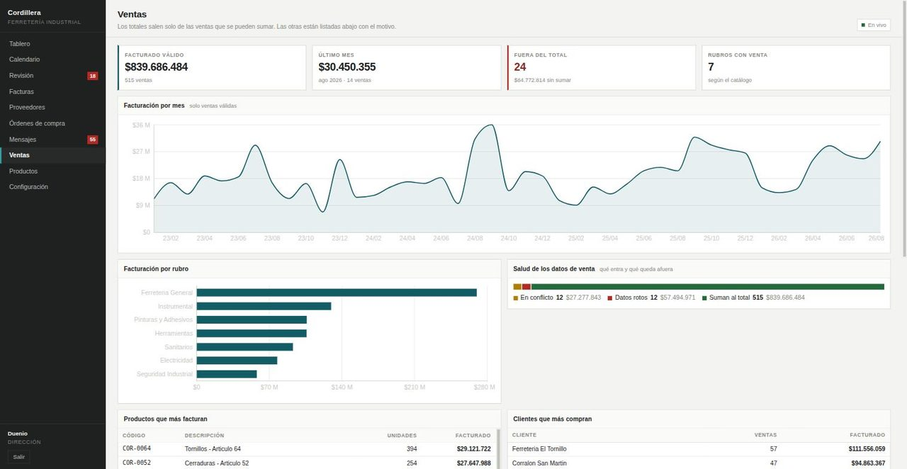
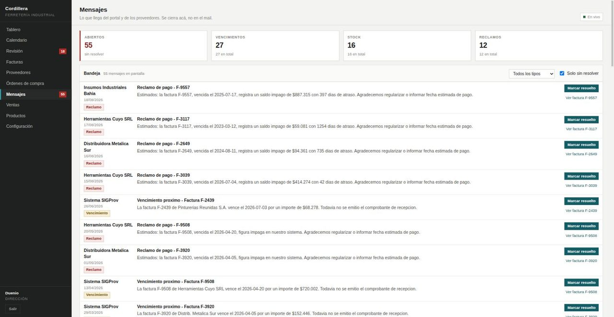
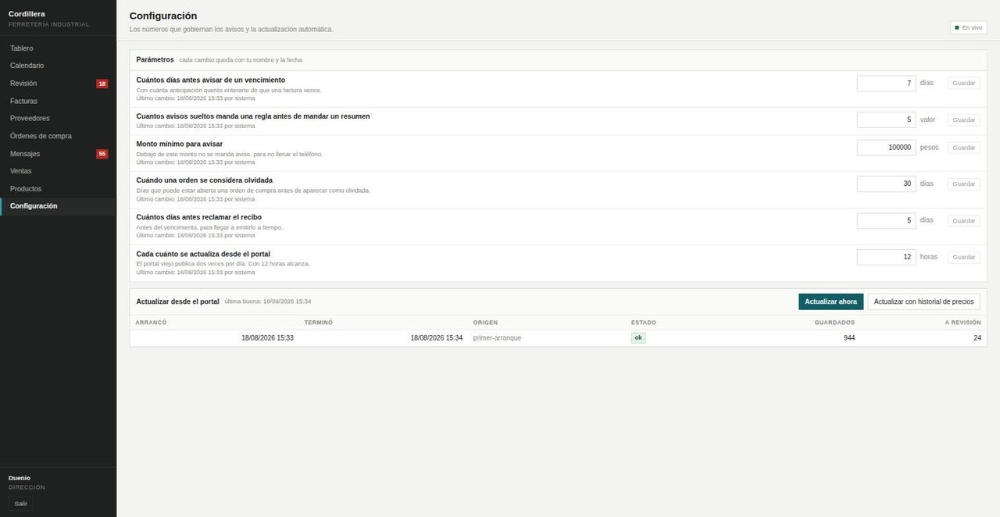

Un portal viejo, de solo lectura, con veinte años de datos adentro. Los vencimientos, los reclamos de proveedores y las órdenes abiertas no tienen sistema de notificación automatizado. Proveedores, rubros y artículos llegan escritos en varias formas distintas, así que ningún total cierra del todo.
Traer todo lo que hay en el portal viejo para dejar de depender de él, y en su lugar un sistema que lee los documentos con inteligencia artificial y OCR, venga foto, PDF, planilla o texto; automatiza las alertas al personal por WhatsApp o Telegram cuando un evento tiene importancia; consolida los datos repetidos; y deja a revisión pendiente lo que no pudo resolver automáticamente.
Cuatro pasos. Entra algo, se automatiza la lectura, se ordena y se guarda, y desde ahí el agente trabaja solo: el equipo se entera sin ir a buscar nada. Hay dos caminos marcados con color: en verde, los papeles y los datos; en amarillo, las personas y los avisos.
El sistema detecta automáticamente el tipo de archivo y usa inteligencia artificial (OCR) para cargar los datos, así que un PDF que en realidad es una foto se resuelve solo. En este caso entraron 100 facturas del portal: 46 fotos escaneadas, 29 planillas y 25 PDF con texto.

| Campo | Valor | Confianza |
|---|---|---|
| numero | F-9936 | 0,95 |
| fecha | 2024-08-07 | 0,88 |
| proveedor | Electrical Supply Argentina | 0,95 |
| total | $442.965 | 0,95 |
| vencimiento | no aparece en el documento | |
| cuit | el CUIT del documento es del cliente, no del proveedor | |
Pasa en el momento en que el archivo se carga, que es cuando el dato se consolida contra lo que ya está en la base. Si hay dos importes candidatos, el agente no elige ninguno: deja los dos a la vista y manda el aviso, con el motivo.
Cada campo viaja con el lugar exacto de donde se leyó: OCR, línea 6, celda B4, columna 'Fecha', fila 12. Siempre hay respuesta a "de dónde sale este número".
Los archivos que entran al sistema los agrega el agente. Entra el archivo tal como está, el agente saca los campos y los carga. El mismo archivo subido dos veces se reconoce por su huella y no se carga de nuevo.
lo que viene la pantalla para soltarlo arrastrando, y el mismo camino cuando la foto llega por WhatsApp.
El agente no calcula: las herramientas calculan por él. El agente solo elige y usa la herramienta que corresponde. Todo queda registrado, para auditar después y para validar los casos borde.
"registrá 200 mil en la F-7797" es un pago, no una consulta.
Toma la herramienta que corresponde, con los argumentos ya normalizados.
La herramienta valida y devuelve el dato real. Si algo no cierra, devuelve el motivo.
Contesta en palabras, para aprobar lo que se va a agregar a la base, y deja el rastro completo.
La propuesta es la automatización completa del sistema desde el teléfono. Requiere un número de teléfono y un chip dedicado para vincular WhatsApp. Si eso no es posible, Telegram se implementa sin chip.
Un chip dedicado al sistema, dado de baja antes de WhatsApp común y de WhatsApp Business: un número registrado en la API de Meta no puede estar activo en esas apps. Ese número es "el sistema" para todo el equipo.
La persona escribe una vez y recibe un código de seis dígitos. Lo devuelve y el número queda probado. Sin ese paso el número es un desconocido, y a un desconocido no se le contesta nada.
El dueño le asigna un rol al número y eso genera un token firmado que dice tres cosas: quién es, qué rol tiene y hasta cuándo vale. Se revoca desde la pantalla, y el número deja de existir para el agente en el acto.
En una ferretería nadie quiere un usuario y una clave más. El teléfono ya está en el bolsillo, ya está probado por el propio WhatsApp, y ya se sabe de quién es.
Atar el rol al número convierte esa identidad que ya existe en un permiso concreto: el mismo rol que gobierna la pantalla gobierna el chat. Un empleado que se va se resuelve borrando un token, no cambiando claves.
Meta pide, además, tres cosas para operar: una cuenta de Business con la app creada, una plantilla de utilidad aprobada en es_AR, y consentimiento por escrito de cada persona que reciba avisos. Los mensajes de plantilla se cobran por unidad, con la categoría utilidad como la más barata.
RAG parte los documentos en pedazos, los guarda en un índice y le acerca al modelo los que se parecen a la pregunta. Para eso necesita dos modelos extra: uno de embedding, que convierte el texto en números, y uno de rerank, que reordena lo que encontró. CAG no usa ninguno de los dos: el sistema inyecta directamente los datos que hacen falta, con herramientas que consultan la base.
Las herramientas son las consultas a la base y los cálculos que salen de ella: deuda por proveedor, cumplimiento de plazos, facturas por estado, recibos que faltan, ventas por mes, stock. Se escriben con la matemática del sistema viejo, convertida en un contrato que el agente puede usar.
El modelo solo traduce a palabras el resultado de esas herramientas deterministas. Y reemplaza la carga manual por una automática, disponible las 24 horas y desde cualquier lado, por WhatsApp o Telegram.
Sumar una pregunta nueva es sumar una herramienta, no reentrenar ni reindexar nada.
Todo lo que una regla puede decidir ya lo decidió una regla determinista: las fechas, los montos argentinos, los nombres de proveedor, los duplicados. Eso es barato, es reproducible y no necesita IA.
El modelo entra donde hace falta criterio: entender qué está pidiendo alguien que escribe apurado desde el teléfono, y leer una factura que llegó como foto. Nada más. Esa frontera es la que mantiene el sistema barato y verificable.
El agente habla con cualquier servidor compatible con OpenAI. Cambiar de un modelo corriendo en una máquina local a uno en la nube son dos variables de configuración: el contrato del agente es el mismo en los dos casos.
Un detalle que sí importa: el modelo local que se está usando no ve imágenes. Por eso las facturas escaneadas pasan por OCR y nunca se le mandan como foto. Esa decisión es la que mantiene el resultado igual con cualquier modelo, chico o grande.
Cinco reglas miran los datos solas: vence pronto, factura sin recibo, orden de compra olvidada, reclamo sin responder, datos esperando revisión. En la última pasada dispararon 110 eventos y salieron 4 mensajes, porque cuando una regla se dispara muchas veces manda un resumen en vez de llenar el teléfono.
Sale como plantilla aprobada por WhatsApp y como texto plano por Telegram. El mismo aviso, el canal que corresponda.
Los vencimientos y los reclamos van a compras. Las órdenes olvidadas, a quien las pide. Los totales del mes, a la dirección. Se asigna por regla, no todo a todos, y se cambia desde la pantalla de configuración.
Con qué anticipación avisar, desde qué monto, y cada cuántas horas se actualiza también son parámetros de esa pantalla: nadie toca un archivo para cambiar de siete a diez días.
Sin credenciales cargadas nada se pierde: el aviso queda en la bandeja del sistema y se entrega igual cuando el canal está listo.
Capturas del sistema corriendo con los datos reales del portal.








Dónde está el trabajo caro de una migración así, y qué falta construir.
Leer el portal y dibujar pantallas es la parte visible y no es la cara. Lo caro es que veinte años de datos escritos a mano entren en una estructura que no miente.
Ahí están los nombres escritos de cinco formas, los importes con dos columnas candidatas, las fechas que no existen, los códigos repetidos con cantidades distintas, el CUIT que en realidad es del cliente. Cada uno de esos casos hay que verlo, decidirlo con el cliente y dejarlo escrito como regla. Es un trabajo de descubrimiento con el cliente al lado.
Después no se repite. Con los datos adentro y las reglas escritas, lo que llega de acá en adelante entra solo: la factura nueva, el documento nuevo y el proveedor nuevo caen en la misma estructura sin trabajo adicional, y el portal viejo deja de hacer falta.
| Qué | Estado | Qué falta |
|---|---|---|
| Lectura del portal, base, pantallas, reglas de aviso | andando | Nada. Corre con los datos reales. |
| OCR de facturas y agente con sus herramientas | andando | Hoy se usan por la interfaz de programación. Falta la pantalla para subir un archivo arrastrándolo y el chat dentro del sistema. |
| Avisos por WhatsApp y Telegram | andando | El envío está construido y probado contra la bandeja local. Falta el trámite del cliente: línea dedicada, cuenta de Meta Business y plantilla aprobada. |
| Hablarle al sistema desde WhatsApp | lo que viene | Recibir mensajes, validar el número con un código y atar el rol a un token. El agente y los permisos por rol ya existen: es conectar el caño. |
| Confirmación de entrega real de un aviso | lo que viene | Meta contesta "aceptado", no "entregado". La entrega real llega por un aviso de vuelta que todavía no se escucha. |
| Fotos sacadas de apuro y muy torcidas | lo que viene | El OCR responde bien con escaneos normales. Una foto con sombra, doblada o torcida necesita enderezado previo, o cae a revisión. |